IsThisMetastasis.info
Is this metastasis?
 If you're not a pathologist, you have a 50/50 chance of correctly identifying which of the above two images
contains metastatic tissue -- the same probability
that an untrained computer could correctly classify the two types of tissue.
The upper image on the left is healthy tissue, and the upper right is metastatic.
How would you classify this other image directly to the right? It has a similar color and structure to the tissue
that you learned was healthy, so you'd probably guess (correctly) that this image also contains healthy
tissue. Is it possible to train a computer to identify these features, and
why is this important?
If you're not a pathologist, you have a 50/50 chance of correctly identifying which of the above two images
contains metastatic tissue -- the same probability
that an untrained computer could correctly classify the two types of tissue.
The upper image on the left is healthy tissue, and the upper right is metastatic.
How would you classify this other image directly to the right? It has a similar color and structure to the tissue
that you learned was healthy, so you'd probably guess (correctly) that this image also contains healthy
tissue. Is it possible to train a computer to identify these features, and
why is this important?
Histology is repetitive
Histology is the study of the microscopic structure of tissue. It is often used to accurately diagnose cancer and other diseases, and it is an essential tool for researchers evaluating new potential cures for these diseases. There are many steps involved in preparing a histological slide before it can be examined by a histopathologist - fixing, processing, embedding, sectioning, and staining.The automation of these steps is offered by a company called HistoWiz that provides automated histology for biomedical researchers, and can process tissue samples in as little as 3-days. HistoWiz returns an ultra-high resolution DZI (Deep Zoom Image) file to these researchers, allowing them to zoom in up to 40x and resolve tissue features on the micron level.
It can take a considerable amount of time for researchers to pour over these images and identify regions of interest. A computer trained to identify those regions would save researchers substantial time and effort, enabling them to accelerate their groundbreaking research. Companies that offer this service would attract new customers, so investment in these techniques is a worthwhile pursuit.
How do we train a computer
There are two steps involved in training a computer to classify images. First, we use algorithms to identify key features within the images that have discriminating power between our different image categories. The algorithms that quantify the structure and color of an image are a subset of a broader field called computer vision.Once we've decided on a set a features which we think may have discriminating power between different categories of images, we can use these features as inputs to a classifier. There are many different classifiers to choose from, but they all generally fall into one of two categories : supervised learning and unsupervised learning. If we have a set of images that has already been labeled, and we want to train a computer to recoginize future images belonging under that label, a supervised learning algorithm would be the best choice. If instead, we want to find unique groups within an unlabeled set of data, an unsupervised classifier would be the way to go.
One last note -- there is a powerful technique called deep learning. Given a large enough dataset, the feature identification and image classification can be learned by a single machine learning algorithm. These algorithms require enormously large training datasets to achieve accurate classifications, but once trained, they can be efficiently repurposed for different applications using a technique called transfer learning.
The data
The data I am working with are composed of 6732 individual tissue slide frame images, equally split between tissue classified as normal and tissue classified as metastatic. Each frame measure 224x224 pixels, and I used a 60/20/20 split to divide that data between my train, cross-validation, and test sets, respectively. Some fraction of the images contain very little tissue (i.e. greater than 95% of the slide is white background). I excluded these slides from my training, cross-validation, and test sets, leaving 6611 total slides to work with. 3962 of these are use for training, 1325 are used for cross-validation, and the remaining 1324 are reserved for testing. After visually inspecting both the normal and the metastatic tissue images in my training set, I engineered the following computer vision features: nuclei density, tissue discontinuity, and color compactness.Nuclei density
 As a particle physicist by training, I noticed that the healthy tissue contains a greater density of "blobs" than
the metastatic tissue (I have since learned that these blobs are healthy cell nuclei).
I implemented a blob finding algorithm using openCV, which
searches each image for groups of connected pixels that share a common property. The parameters of these algorithms
can be tuned to search for blobs of different shapes and sizes. In the image on the right, the yellow circles indicate
where a blob has been found. Because I set up my blob finder to find circular blobs, it misses overlapping nuclei that
appear as a single, elongated blob (e.g. look at the right-middle of the image).
As a particle physicist by training, I noticed that the healthy tissue contains a greater density of "blobs" than
the metastatic tissue (I have since learned that these blobs are healthy cell nuclei).
I implemented a blob finding algorithm using openCV, which
searches each image for groups of connected pixels that share a common property. The parameters of these algorithms
can be tuned to search for blobs of different shapes and sizes. In the image on the right, the yellow circles indicate
where a blob has been found. Because I set up my blob finder to find circular blobs, it misses overlapping nuclei that
appear as a single, elongated blob (e.g. look at the right-middle of the image).
Color compactness
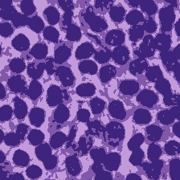 Color compactness is a measure of the color variability in an image. A k-means clustering algorithm is used to cluster the pixels in an image into a specified number of classes (k), such that the sum of the distances (in color space) of each pixel from its assigned cluster center is minimized. This sum (with an addition normalization) is used as the color compactness metric. In other words, color compactness is measure of how well an image can be represented using k colors. The color compactness measure for this project uses k=3. This is motivated by the H&E stain used in these slides, which generally produces dichromatic images (k=3 is used because there is often some white space in an image). The image on the right shows the color compacted image of a slide containing metastatic tissue.Tissue discontinuity
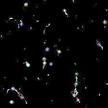 Tissue discontinuity is a measure of the connectedness of tissue in a given slide. Tissue that is very connected will have a low tissue discontinuity score, and vice-versa for disconnected tissue. This feature is computed by converting the image to a black-white representation of itself, and then using an edge detection algorithm to find the boundaries between black and white. Tissue that is not very connected tends to have many small patches of white space, and therefore more edges per unit area of white space (than connected tissue). In the image on the right, the small colored circles show where the algorithm has detected an edge.Absolute color
It can be easy to get excited about computer vision techniques and ignore more basic features that have discrimination power between different types of tissue. The individual R,G,B pixel intensities, averaged over the images as a whole, are very powerful in discriminating between normal and metastatic tissue.Feature distributions
The plots below show the distributions of these features for the normal and metastatic tissue in the training set. The distributions are normalized to unit area, so for each bin on the horizontal axis, the vertical axis represents the fraction of training set data in that particular bin.
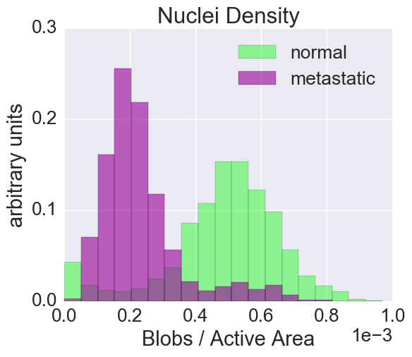 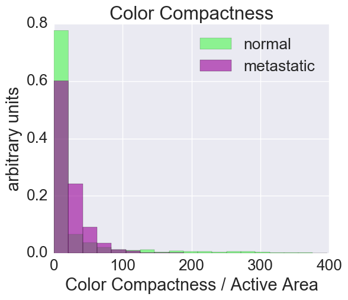 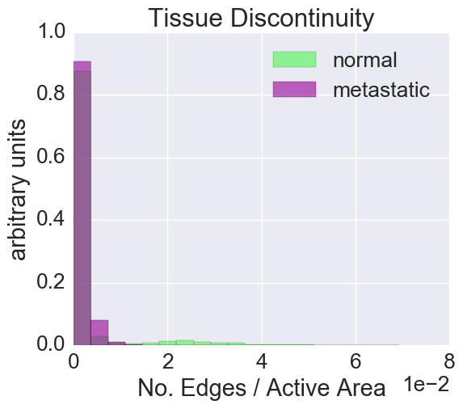
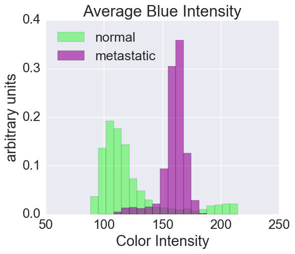 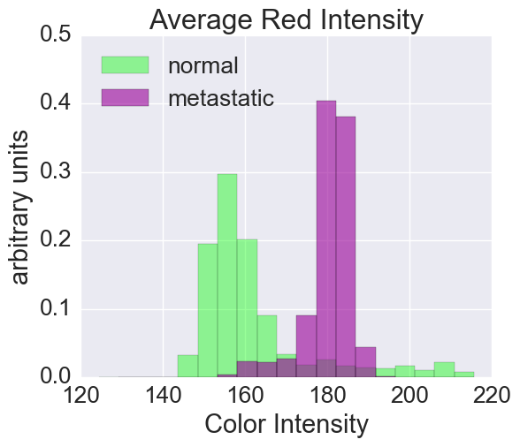 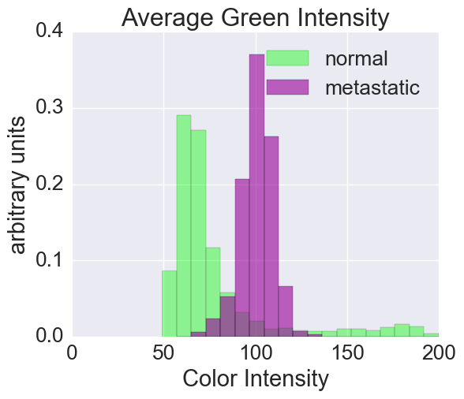
The color compactness and tissue discontinuity features are peaked near zero and difficult to visualize, so I performed a log-transformation to improve the interpretability of these features within the context of the models I have trained (I added a bias value of 0.1*min(feature) to accomodate feature values equal to 0). The distributions of these two log-transformed features are shown below.
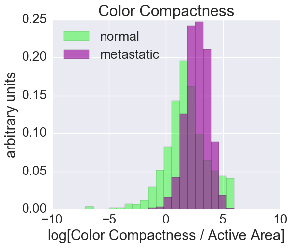 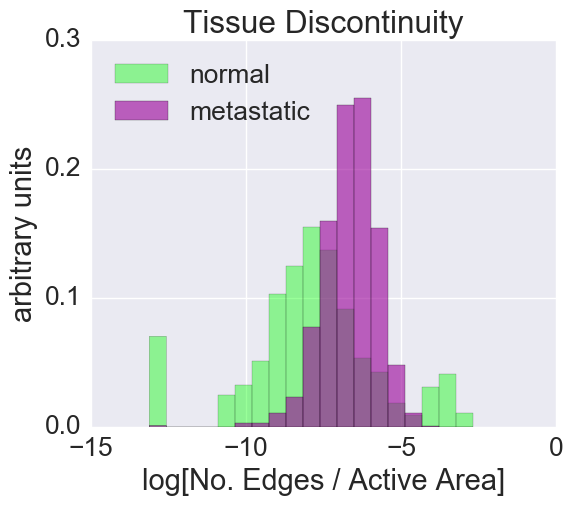
The models
Logistic regression
Many of the feature disributions above show excellent separation between the normal and metastatic tissue (e.g. blob density and the average R/G/B across all pixels). Based on these distributions, I would expect a simple model with a linear decisino boundary, such as logistic regression, to perform reasonably well. I trained scikit-learn's LogisticRegression classifier with its default parameters on the 3962 slides in my training set. I tried different values of the regularization parameter (C) ranging from 0.0001 to 10,000 in multiplicative steps of ~3. This classifier achieves 94.6% accuracy (with C=30), evaluated on the cross-validation set. Of the 71 misclassified slides, 40 are metastatic tissue misclassified as normal and 31 are normal tissue misclassified as metastatic. In a logistic regression model, the magnitude of the learned feature coefficients give the relative importance of each respective feature. The ranking from the most to the least important feature is:- Average Pixel Red
- Average Pixel Green
- Average Pixel Blue
- Tissue Discontinuity
- Color Compactness
- Nuclei Density
At first glance, it is maybe a bit surprising that the nuclei density ranks so low in feature importance. The nuclei density distributions for normal and metastatic tissue look very separated. However, the nuclei density is highly (anti-)correlated with all three average pixel colors (as can be seen in the correlation matrix below), and the pixel colors already have a high feature importance. 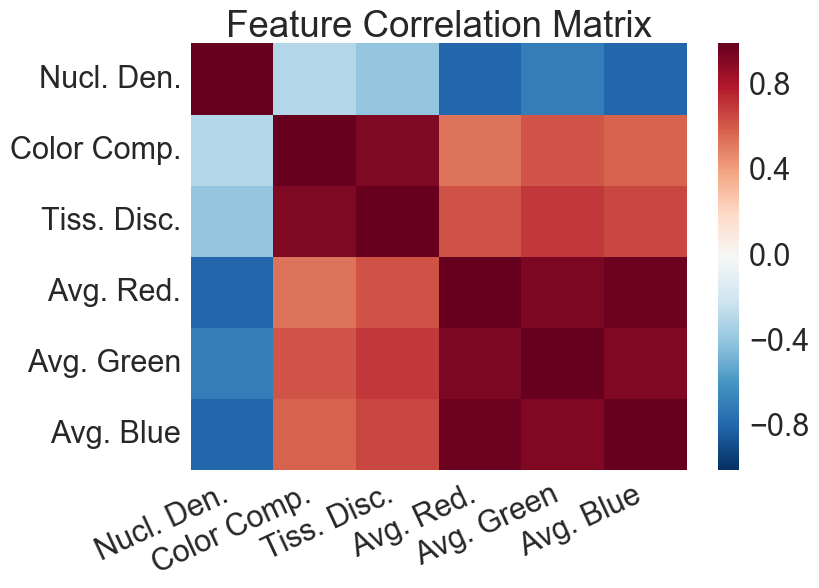
Neural net
Logistic regression models have a linear decision boundary. If the tissue and metastatic tissue slides are not linearly separable, it may be advantageous to move to a non-linear classifier, such as a neural network. I used the Multi-layer Perceptron (MLP) classifier in scikit-learn. For this model, it is possible (and advised) to specify the number and size of the hidden layers. I iterated over models with one hidden layer of size k1={2,...,11} and regularization parameter alpha={1e-5, 3e-5, 1e-4, ... , 100, 300}. The optimal cross-validation accuracy was found to be 97.3% for (k1=4, alpha=0.01. By fixing k1=4 and adding a second hidden layer(again iterating over the size of the second hidden layer), the cross-validation accuracy did not improve, so the second hidden layer was not kept. Overall, the neural net classifier performs modestly better than the logistic regression classifer, due to the non-linear decision boundary.What about deep learning?
Deep learning is a technique in which multiple layers of nonlinear processing units are used to derive high level abstractions of data. These methods require an enourmous collection of data and a signficant amount of computing capabilities, usually only found at prominent tech companies and research labs. Inception-v3 is a convolutional neural network, trained on 1 million images across 1000 individual categories, to perform image recognition and categorization.Can I do deep learning?
Although it is not feasible for most individuals to train a network like Inception-v3 from scratch, pre-trained networks can be repurposed to perform new tasks using a method called transfer learning. The motivation for transfer learning comes from the fact that most layers in these neural networks are not performing the classification task itself, but instead, they are deriving abstract features on which to perform a classification task. The bulk of the classification happens in the last layer. Therefore, we can simply "chop off" this last layer, and use the output features from the second-to-last layer as inputs to a new classifier.Transfer learning for tissue classification
For the Inception-v3 network in particular, the relevant output layer for transfer learning is called "pool_3" and produces 2048 features which can be used as inputs to logistic regression or an MLP classifier. I passed my collection of slide frames through the Inception-v3 neural network and extracted the pool_3 feature vector for each image. Due to the large size of these feature vectors, it is useful to perform a principal component analysis to reduce the dimensionality of the data. The figure below shows the cross-validation accuracy of a logisitic regeression classifier, as a function of the number of principal components. Results are shown for different regularization parameters in red and blue. The blue trainings suffer from overfitting due to less regularization. The black horizontal line near the top of the figure is used to reference the accuracy of MLP classifier trained on the six features derived using computer vision techniques. Roughly 200 principal components are needed to achieve a similar accuracy as the computer vision + MLP classifier!
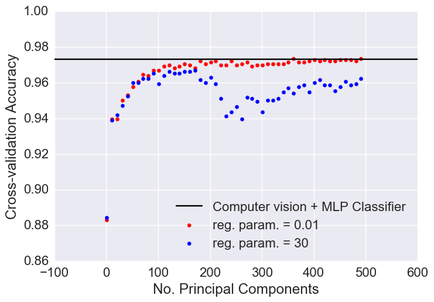
The performance looks similar
Yes, both models have a classification accuracy of ~97% on the cross-validation sample. This might lead one to wonder if there are certain advantages to either approach. The transfer learning method has the advantage that it did not require any feature engineering ! This approach is required for image recognition tasks where it can be hard (if not impossible) to define general features for image classification (i.e. recognizing most everyday objects that come in many shape, colors, and sizes). For our tissue classification task, many of the features are well suited for computer vision algorithms. Still, starting from the Inception-v3 network could have saved a day or two of manual feature engineering.One of the potential drawbacks of the transfer learning method is the large number of features required to achieve the same cross-validation accuracy as was achieved using computer vision features as inputs to the classifier. It is possible that the larger number of features requires more training examples to achieve the same accuracy. This was investigated by selecting different size subsets of the training data to train the classifiers (i.e. looking at the learning curves). The results of this exercise are shown below.
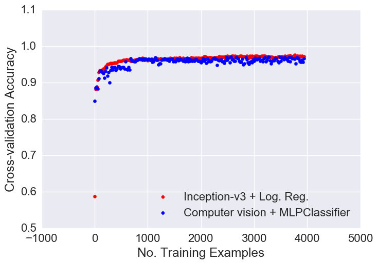
The size of the training set is varied from m=1 to m=3962 (the total number of training examples). For each m, both a model based on the six computer vision features and a model based on the transfer learning features are trained using those m examples, and the accuracy is evaluated on the cross-validation sample. For the transfer learning method, because the number of principal components cannot be larger than the number of training examples or the number of features, min(m, no. features) is chosen to the number of principal components.
Conclusion
Neither approach shows a clear advantage in the number of training examples required to achieve a high cross-validation classification accuracy. The human engineering computer vision features are attractive because they can be easily communicated to a pathologist. The transfer learning approach is nice because it requires less input on the human-side of things, and can be more easily generalized to new classification problems. Both approaches give very nice results and should give pathologists confidence that we can eliminate some repetitiveness from their work!What's next
This work is largely a proof-of-concept. In a real world examples, whole slide images are composed of thousands of individual slide frames and can contain many more than two classes of tissue. Unless we can construct a training set with a sufficient number of images from each of these classes, we will need to resort to unsupervised learning approaches. One could imagine a heat map indicating the location of each of the unique types of tissue on a slide, with a key showing a representative slide frame from each of those groupings. The work presented in this blog gives evidence that with a bit more work, these sorts of applications are very possible!
Peyton Rose . Insight Health Data Science Fellow . pwrose21@gmail.com